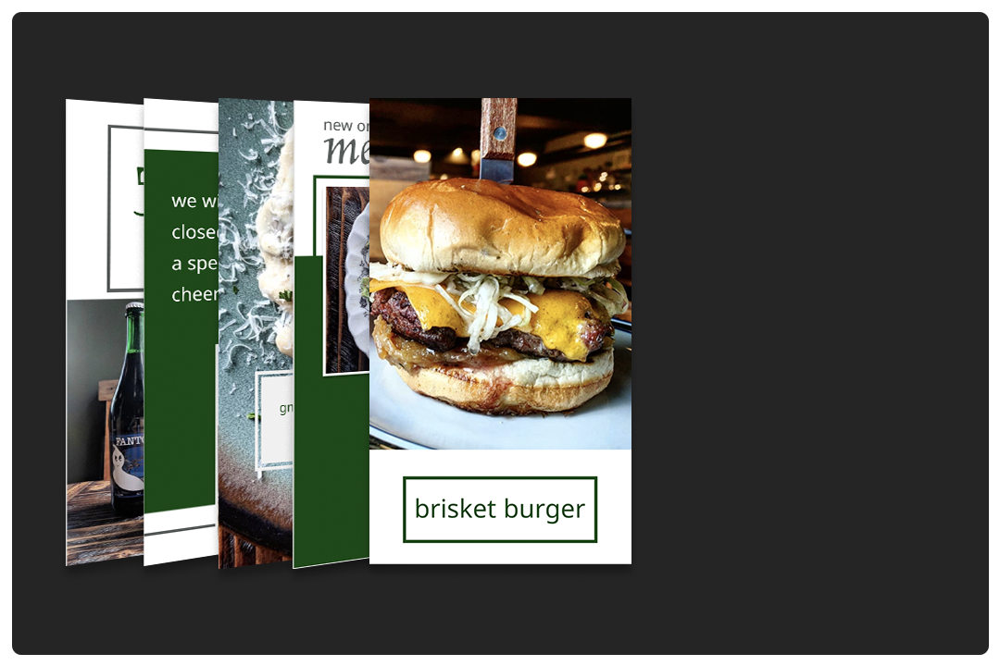
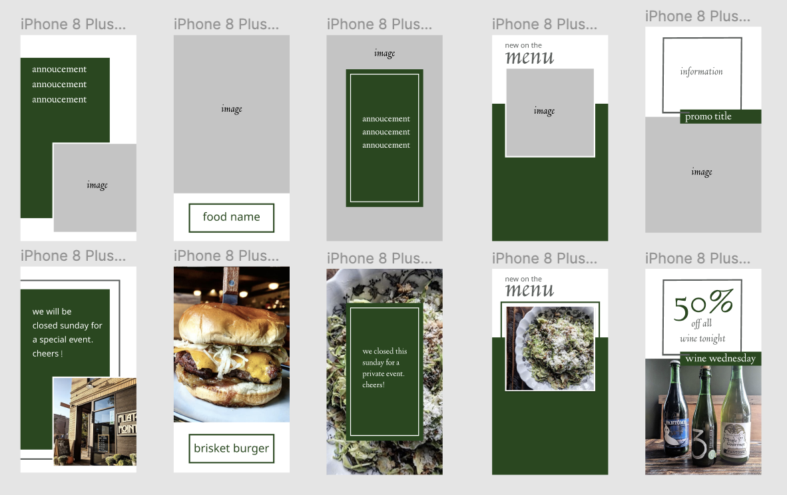

FLAT&POINT
Role: Graphic Design
When: October 2019
Outcome: A set of templates for Instagram Stories.

PROBLEM
Flat&Point is a small, new restaurant in Chicago that was struggling to gain social media presence. The company does not have funding to hire a social media director yet, therefore the owner covers social media among her several other roles in the restuarant. She did not have the time or energy to up her social media presence.
RESEARCH
In order to understand and create for Flat&Point, I followed lots of popular restaurants in Chicago to gain a sense of their social media presence. I started following Michelin Starred restaurants including Spiaggia and Giant. I also followed some non-Michelin starred restaurants that are still pretty awesome including High Five Ramen and Green Street Meats.
From following other accounts, I was able to gain a sense of what works well. I noticed repition of colors and branding really made these accounts stand out.
Before I jumped in to start designing templates, I followed Flat&Point's current method for Instagram Stories to see how they were currently using the platform. I learned that the stories is where they liked to promoted specials and deals for the week. I gathered a list of their needs for making an Instagram Story.
DESIGN
The final design for this particular project was a set of templates for the user to fill in whenever a new story was needed. I used Figma to wireframe the pages, design the layouts, and create sample versions of the templates in use.

TAKEAWAYS
Although a pretty fun, lax project- I had a lot of takeaways from working on this small task. First, this was my first time working in social media outside of my use of the platforms. It was a shock to really see how much goes into a great social media aesthetic. Secondly, working on building templates for the final product really made me focus on usability, repetition, and simple design.